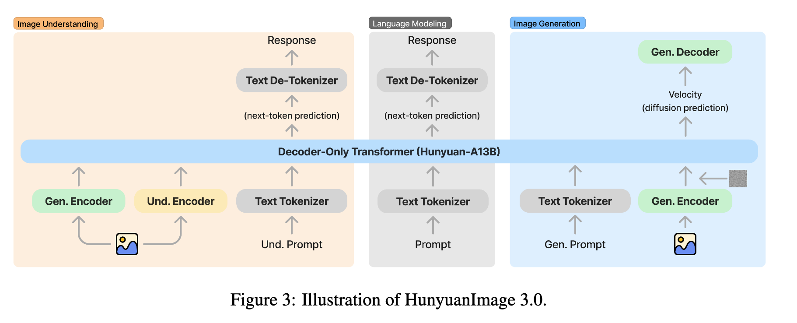
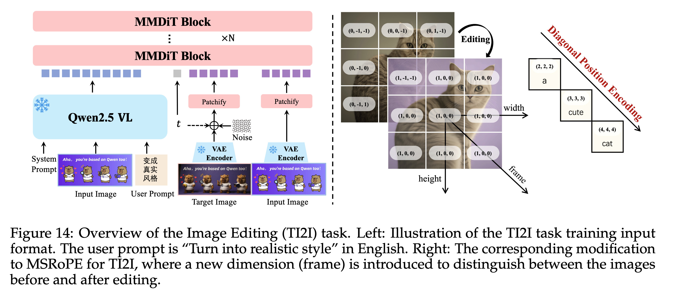
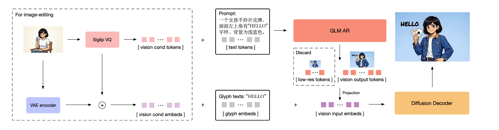

AI
How Gemini-Omni Might Work
This is my high-level speculation on how Gemini-Omni, Google’s latest video editing/generation model, might be implemented.
Public information is not sufficient to identify the exact architecture, but I see three reasonable possibilities from high to low probability:
- Transfusion / HunyuanImage-3.0-style single unified transformer for joint multimodal understanding and generation. Most likely for Gemini-Omni.
- Qwen-Image-Edit-style encoder-decoder system: Gemini as a multimodal encoder, whose embeddings are then used as conditioning for a flow-matching model to render video. Most likely for Veo 3.
- GLM-Image-style hybrid: autoregressive coarse visual tokens in discrete space + diffusion refinement in continuous space. Plausible for images, but less likely as the main dense video route this year.
I believe the Transfusion-style unified model is the most likely architecture for Gemini-Omni.
Roadmap 1: Transfusion
This is the Transfusion-style roadmap, and my top choice for Gemini-Omni.
The core idea is one shared transformer that handles both:
- Next-token prediction for text and discrete tokens
- Flow matching for continuous image, video, and audio latents
Simplified training/inference flow:
Text / Image / Video / Audio Context
↓
Shared Multimodal Transformer
↓
Next-token prediction (discrete modality like text generation) + Flow matching (continuous modality like video/image/audio generation)
↓
Text, Images, Video, or Audio Output
A blockwise causal mask is used: text regions (causal attention) follow standard next-token prediction, while visual/audio regions (full attention) are trained with flow-matching objectives.

Why this is attractive:
Most diffusion systems still use an encoder-decoder architecture, where the encoder is a text encoder that encodes a text prompt into embeddings, and the decoder is a DiT that iteratively denoises.
Previously, a tiny CLIP text encoder was used, as in Stable Diffusion. Such an encoder-decoder architecture made sense, as the encoder was tiny anyway.
Modern DiTs use heavier LLMs (like Mistral) or VLMs (like Qwen2.5-VL) as text encoders, as in FLUX 2.0 and Qwen-Image-Edit. This shift from simple CLIP to a larger-scale pretrained LLM makes sense, as it brings better prompt alignment and multimodal conditioning support (e.g., natively supporting reference images/videos).
The encoder can now be a massive multimodal model, such as Gemini 3.5 Flash with about 250B parameters and 45B active parameters. Using a huge model only as an embedding extractor feels wasteful when it already deeply understands the prompt, source video, audio, dialogue, and editing intent.
A unified Transfusion-like model removes the awkward split between “the model that understands” and “the model that generates.” It unifies the architecture (as the text encoder and DiT are both Transformers anyway) through unified losses, which not only leads to better prompt alignment but also enables joint multimodal understanding and generation, which is important for editing.
The word “Omni” in Gemini-Omni also strongly suggests this single model family that processes and generates across modalities, exactly what this roadmap delivers.
Roadmap 2: Gemini as Multimodal Encoder and DiT as Video Rendering Decoder
This follows the Qwen-Image-Edit pattern, applied to video.
Gemini does not replace the video backbone. It acts as a multimodal encoder whose embeddings are then used as conditioning for the DiT to render a video for generation or editing.
Architecture:
Text / Image / Video / Audio / Dialogue Context
↓
Gemini Multimodal Model
↓
Prompt rewriting + Dense multimodal embeddings
↓
Latent Video/Audio Diffusion Model
↓
Edited Video + Audio

Key advantages:
- Keeps the video generator specialized for high visual quality
- Makes it easier to upgrade understanding by improving Gemini
- Reuses strong pretrained Gemini and Veo models
This is likely the most likely architecture for Veo 3: Gemini understands intent, and DiT renders.
Limitation: it remains a two-system pipeline rather than a true single “Omni” model.
Roadmap 3: Autoregressive Coarse Tokens + Diffusion Refinement
This is the GLM-Image-style hybrid.
The model first autoregressively generates coarse visual tokens: layout, structure, composition, and low-resolution content. Then a diffusion model refines them into high-quality output.
Pipeline:
Prompt / Multimodal Context
↓
Autoregressive Model → Coarse Discrete Visual Tokens
↓
Diffusion Refinement Model
↓
High-Quality Image or Video
This works excellently for images. For dense video, however, token count explodes because video has space, time, motion, temporal consistency, and often audio. Even with compression and hierarchy, the cost is severe.
I see this roadmap as a future version for video generation, as the benefits are clear: being able to use all techniques from LLMs for video generation, such as KV caching, speculative decoding, CUDA Graph acceleration, and training infrastructure.

My Current Guess
Final ranking:
- Unified Transformer (Roadmap 1): most likely for Gemini-Omni
- Gemini-DiT (Roadmap 2): most likely for Veo 3
- AR + Diffusion Hybrid (Roadmap 3): less likely for current video generation and possibly a roadmap for future video models
The name Gemini-Omni points toward unification, and the field is clearly moving toward less glue, more shared modeling across modalities (text, image, video, audio, and action for world modeling in the coming months).
References
- Google, “Introducing Gemini Omni.”
- Google DeepMind, “Veo 3 Technical Report.”
- Zhou et al., “Transfusion” (arXiv:2408.11039).
- Zhipu AI, “GLM-Image.”
- Qwen Team, “Qwen-Image” and “Qwen-Image-Edit.”
- Tencent Hunyuan, “HunyuanImage-3.0.”
What do you think is the most likely path? Would love to hear your thoughts in the comments.
Senior Research Scientist at Snap Inc. Writing about AI research, model scaling, agents, and markets.
Comments